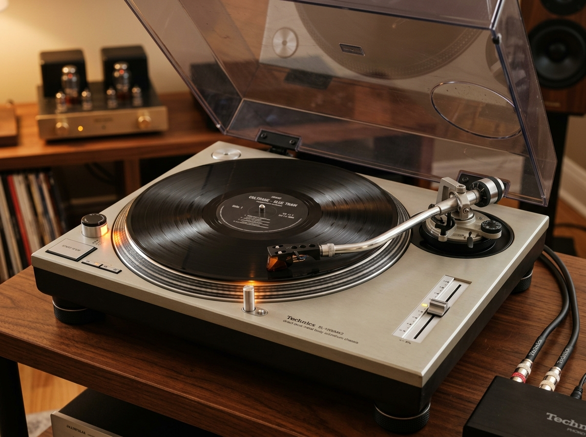

A Arte e a Alma do Som Analógico: Restauração & Vitrolas Selecionadas
Transformamos equipamentos clássicos em obras de arte funcionais. Toca-discos das décadas de 60, 70 e 80 totalmente restaurados, calibrados com instrumentos de precisão e prontos para girar seus vinis favoritos.

Restauração Artesanal
Desmontagem minuciosa de cada componente mecânico, higienização química e relubrificação de alta densidade.
Peças Originais
Trabalhamos exclusivamente com correias novas de precisão, cápsulas magnéticas e agulhas genuínas de diamante.
Calibração Precisa
Alinhamento milimétrico de tracking force com balança digital, anti-skating e teste estroboscópico de rotação.
Envio Seguro Nacional
Embalagem personalizada e reforçada contra vibrações, protegendo o prato e o braço até a porta da sua casa.
Vitrine em Destaque
Equipamentos vintage revisados, testados por mais de 48 horas ininterruptas e com garantia de 90 dias da oficina.
Nossos Serviços Especializados
Da restauração estética em madeira nobre à calibração eletrônica de ponta para colecionadores e amantes de música.
Desmontagem integral, polimento químico de tampas acrílicas, restauração e verniz de gabinetes em madeira nobre e troca de correias ressecadas.
- Polimento cristalino de tampa acrílica sem marcas
- Marcenaria e revitalização de acabamento em verniz
Instalação de agulhas e cápsulas de alta performance (Audio-Technica, Shure, Ortofon). Calibração precisa de transferidor (protactor) e peso de trilhagem.
- Eliminação de distorção de rastreamento (Inner Groove)
- Ajuste fino de azimute e ângulo vertical de rastreio (VTA)
Substituição de cabeamento antigo oxidado por cabos blindados de áudio estéreo com conectores RCA banhados a ouro e aterramento dedicado contra ruídos indesejados.
- Fim do zumbido (hum) em caixas de som e receivers
- Instalação de pré-amplificadores phono internos opcionais
Ajuste estroboscópico de pitch nas velocidades 33, 45 e 78 RPM, regulagem do mecanismo automático de retorno do braço e lubrificação técnica do eixo central.
- Estabilidade absoluta de rotação sem oscilações
- Lubrificantes sintéticos específicos para mecânica fina
Como Funciona Nosso Processo
Tratamos cada equipamento com o mesmo respeito e carinho de uma peça de família. Acompanhe as 4 etapas do nosso trabalho:
Diagnóstico & Orçamento
Você nos envia fotos e o defeito apresentado via WhatsApp ou traz o aparelho em nossa oficina em Santo André. Elaboramos um laudo detalhado e orçamento transparente.
Desmontagem & Restauração
Desmontamos o aparelho, limpamos os resíduos de graxa antiga ressecada, consertamos a parte eletrônica, restauramos a madeira e polimos as peças metálicas e acrílicas.
Calibração & Testes
Calibramos o peso da agulha, anti-skating e azimute. O aparelho passa por teste estroboscópico e 48 horas de reprodução contínua para atestar estabilidade absoluta.
Entrega com Garantia
Seu equipamento é embalado em caixa reforçada à prova de impactos e entregue com certificado de revisão e garantia de 90 dias com suporte pós-venda direto.
Estudo de Caso: Antes e Depois da Oficina
Arraste o cursor central para comparar o estado inicial de resgate com o resultado final após a restauração e polimento por André Denani e Emilio Colonic.


O Que Dizem Nossos Colecionadores
Mais de uma década entregando música, história e paixão analógica por todo o Brasil.
"Enviei o toca-discos Gradiente que era do meu pai, parado há quase 20 anos na garagem. O Emilio e o André devolveram o aparelho parecendo que saiu da loja ontem! O som é inacreditável. Trabalho de mestre!"
"Comprei uma Technics SL-D20 pelo site. Chegou no Rio de Janeiro impecavelmente embalada, com travas no braço e prato desmontado. Bastou plugar no receiver e ouvir o primeiro vinil. Nota mil!"
"O atendimento do André pelo WhatsApp é diferenciado. Ele entende de som de verdade, me orientou sobre a escolha da cápsula Audio-Technica e calibrou o contrapeso com perfeição. Recomendo de olhos fechados."
Tem um Toca-Discos Precisando de Vida Nova?
Não deixe sua história parada pegando poeira. Converse diretamente com nossos especialistas e receba uma avaliação técnica sem compromisso.